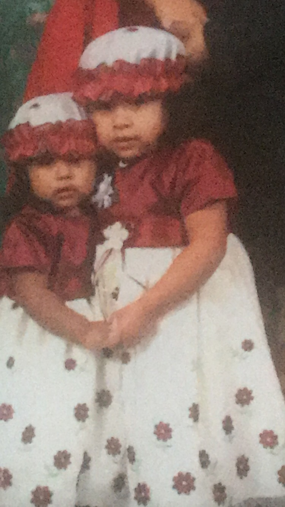
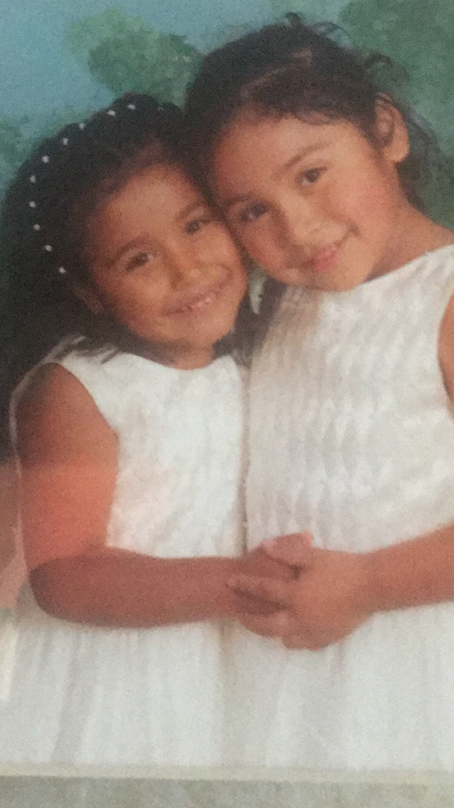
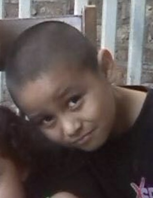
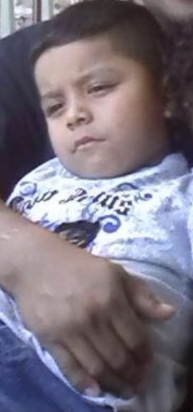

Most of my childhood adventure was in the backyard where my cousins and I would run around do dumb things and have fun
we never were looked overe by adults it was just 4 of us.

My sister( to the right) is one of the most strict parently person ever, even as a kid she was always on us, always the “mother” in the group, wasn't that exciting. My dad once signed us up to do taekwondo, and it was all fun and games till our instructor got down to business
see we never looked forward to fridays cause that was sparing days and he always put us to fight with our friends and it was in this small garage. This time we couldn't wear our protective padding around our waist. We were already part
of this taekwondo for 1 year so we all knew a lot. My sister was really strong and always but her to fight with kids much older and the older kids were all male. So it was her turn to spare she tried not to look upset but I knew deep down she didn't want to do this but she has no other choice with a huge
kick to her side she fell down she couldnt breath she had gotten the wind knocked out of her what was left to do now? Yes it was my turn to fight him as if that was a good idea.

I wasnt really the type of kid to do something dumb because I thought about it, I always made my cousin go first to see if it was safe, see I was dumb but not stupid, I always came up with new ways to challenge each other to do crazy things.

This is Josue. He is a few months younger than me. He was a little bit of a crazy tricks kid and always did what I said
which did not lead to good circumstances. His story is scary I had a grand idea to tie my 2 year old puppy to a wagan I had her pull all 4 of us and she was a big dog so with not trouble she did
she took us a block away and I told them we should all jump out to try to catch her cause she was going fast and told Josue to jump out first he did. Scraping his knee hitting his head and everything became bloody

It was common for us to ride our bikes during the summer. Once were riding around and we saw that someone had left a metal bed frame Josue decided to ride his bike on it us thinking that was a good idea he did it wasn't all that cool
but we enjoyed the many failed attempts now his younger brother isaac decided to try and his bike was a brand new lightning mcqueen one with training wheels so he goes up paddling as fast as he can and as he's coming down backwards his wheel get caught on the bed frame he falls back
and there blood and he starts to cry and my sister ran to my grandma and my and my other cousin were pulling him by his legs towards the house... we didn't see him for a week and consistently protected him afterwards